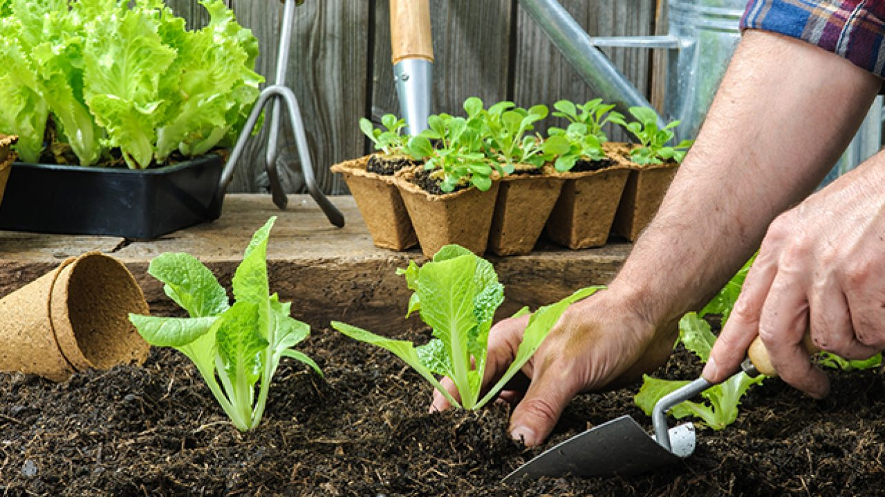

Researching fertilizers is vital as it can greatly benefit many communities in a form of enhancing the gardening
experience. By finding out which of the fertilizers is the most efficient we can help improve crop quality in rural
areas and help anyone who’s interested in gardening.
Our community Madrasah can be benefitted from our proposal as it can sustain better planting qualities, specifically
on growing sweet potatoes or Ipomoea Batatas. Soybean meals are chosen as our initial fertilizer compost as they
are compatible with sweet potatoes. They consist of vitamins that are essential in growing our chosen plant. We have
chosen sweet potatoes as our plants as they are healthy and tasty, perfect for the beneficiaries in our partner institution
to consume; and with our SIP proposal, we can better research more on how to grow these consumables effectively.
We decided to launch this research to somehow enlighten or help our partnered institution “Madrasah” in terms of
providing healthy food/snack to the advocacy. This study aims to better determine whether soybean meals used
as fertilizer for sweet potatoes is a good idea in measuring how fast the plants can grow. With adequate research, we
were able to find out how soybean meals are known to provide a lot of natural vitamins and minerals including
phosphorus and nitrogen, which are what sweet potatoes mainly need to grow fast. With this research, we hope to see
progress on how soybean meals will affect sweet potatoes so we can approve our hypothesis and conduct further
action to help Madrasah.
If soybean meals are used as a fertilizer for sweet potatoes, then the sweet potato will grow faster.
Independent Variable:
The presence of soybean meals as fertilizer for the Ipomoea Batatas
Dependent Variable:
The growth of Ipomoea Batatas Controlled Variables:
Amount of Water used to sustain the plant
Number of hours under sunlight (room temperature)
Amount of soil used
Type of soil used
Size & type of pot
Number of replicates
Type of plant
Duration of experiment